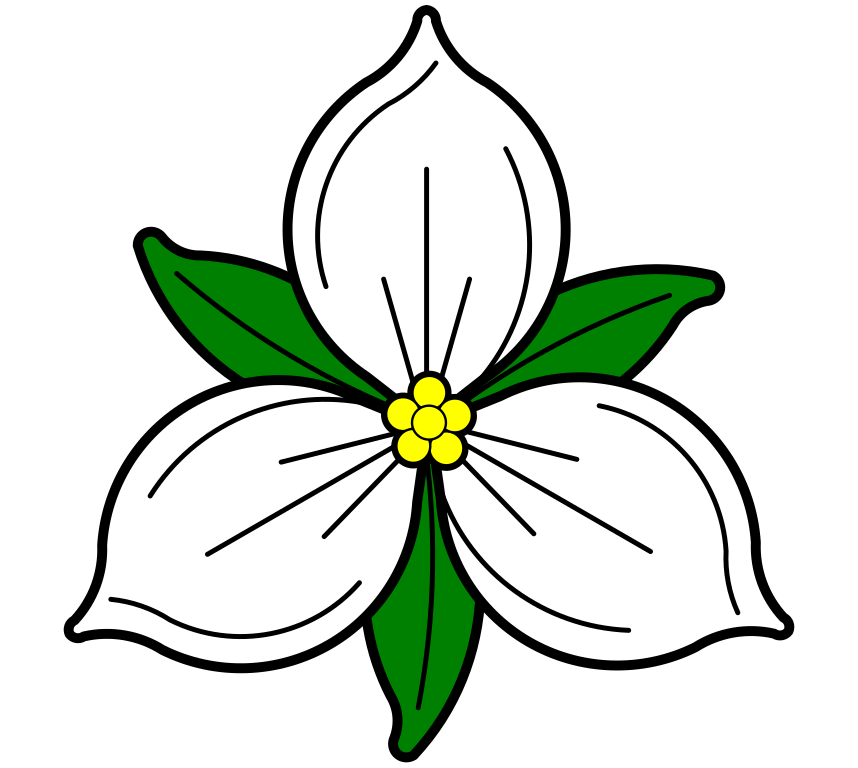

<header class="site-header">
  
 <span class="header-title">
  <span class="slr s">S</span>
  <span class="slr l">L</span>
  <span class="slr r">R</span>
  Memorial Florilegium
</span>

<button id="modeToggle">🌙</button>
</header>

<link
  href="https://fonts.googleapis.com/css2?family=Mea+Culpa&display=swap"
  rel="stylesheet"
/>
